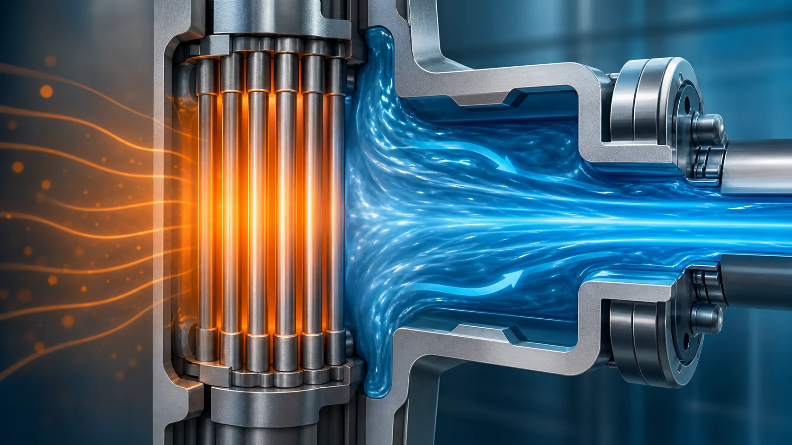
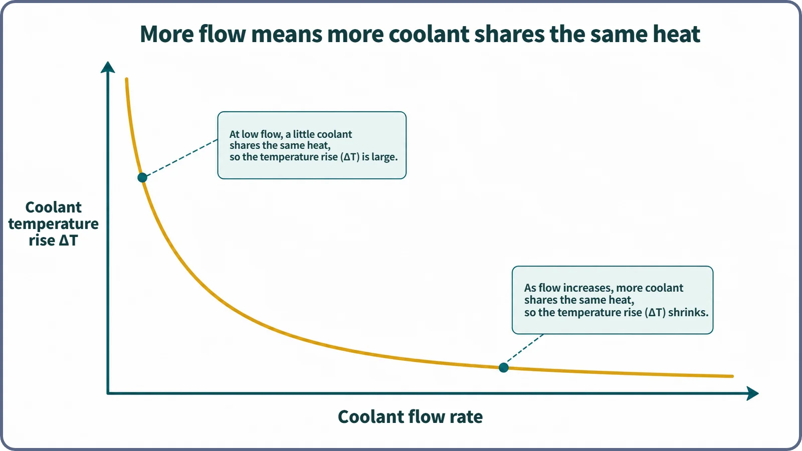

Heat Transfer & Thermal Hydraulics · 132
Low Fan or High Fan? — Why Coolant Flow Rate Changes the Temperature
Turning up a fan doesn't make you sweat less, but it carries the heat away faster. Reactor coolant works the same way.

The heat produced in a reactor core is set by its power, not by how fast the coolant flows. What the flow rate decides is how much the coolant warms up: the more coolant shares the same heat, the smaller its temperature rise. That simple energy balance is why reactor coolant pumps, and the protection system that watches them, matter so much.
Same sweat, different feeling
Sit in front of a fan on a sweltering day. On low, you still feel hot; press high and, though you sweat exactly as much as before, you suddenly feel much cooler. The heat your body produces did not change. Only the amount of air carrying it away did: how much air sweeps past your skin each second.
A reactor works the same way. The heat produced each second in the core, where fission takes place, is set by the reactor's power and in principle has nothing to do with coolant flow. If a lot of coolant carries that heat, each bit warms only a little; if little coolant carries it, the same heat produces a much bigger temperature rise.
The analogy has a limit: sweat also cools by evaporation, a change of phase, whereas the coolant temperature rise discussed here usually assumes single-phase flow with no boiling. It is good only for the qualitative idea that more flow means a smaller temperature rise.
Flow rate is not flow velocity
Flow rate is the amount of coolant passing through a cross-section per unit time. Flow velocity is how fast the coolant moves. A fast flow through a narrow channel can still deliver little, while a modest velocity in a wide channel can deliver a lot. When we say flow rate changes the temperature, we mean the amount carried per unit time.
The short equation behind it
The relationship is a simple energy balance:
Q ≈ ṁ × cp × ΔT, or rearranged, ΔT ≈ Q ÷ (ṁ × cp)
| Symbol | Meaning |
|---|---|
| Q | Heat absorbed by the coolant per unit time |
| ṁ | Flow rate: amount of coolant flowing per unit time |
| cp | Specific heat: heat needed to raise the material's temperature by one degree |
| ΔT | Temperature rise of the coolant across that section |
If Q and cp don't change much, the larger the flow rate, the smaller ΔT, and the smaller the flow rate, the larger ΔT: the two are close to inversely proportional. In a real core the heat generation is not uniform along its height, so local distributions are more complicated; this is the qualitative, average view for the whole core or one coolant channel.

In a pressurized water reactor, which keeps its coolant at high pressure so it does not boil, designers choose a flow rate that keeps the coolant temperature rise across the core, inlet to outlet, at roughly a few tens of degrees. The exact figure depends on reactor type, design and operating conditions. Since power fixes the heat, flow rate is the handle that keeps the temperature rise in range.
Easy to mix up
Flow rate vs thermal conductivity. Low thermal conductivity makes heat back up inside a material. Flow rate is an energy-balance matter: when flowing coolant shares a fixed amount of heat, the bigger its share, the smaller the temperature rise per unit of mass.
Flow rate vs the heat transfer coefficient. More flow usually means faster coolant, which also helps heat pass from the cladding surface into the coolant. That is a separate effect; here the point is how much coolant shares the heat.
Why plants watch flow rate so closely
The reactor coolant pumps exist to deliver enough flow to the core. More flow leaves more margin in coolant and fuel temperatures for the same heat, the thermal margin. If a pump stops or flow suddenly drops, the heat stays the same but less coolant shares it, so the temperature rise grows and fuel and cladding temperatures can climb. Flow rate is therefore a key variable the reactor protection system monitors, and an abnormally low flow is designed to trigger actions such as an automatic reactor shutdown. Specific setpoints and system names differ by reactor type and plant.
Two common misconceptions
"More flow means less heat is produced." No. The heat is set by fission power and is in principle independent of flow; turning up the fan doesn't make you sweat less.
"The more flow, the better, always." Not necessarily. More flow helps thermal margin, but real designs balance it against pump power, flow-induced loads and vibration on piping and structures, and pressure losses through the channels.
Key takeaways
- The heat produced in the core is set by reactor power and is, in principle, independent of coolant flow rate.
- For the same heat, high flow means a small coolant temperature rise and low flow a large one: Q ≈ ṁ × cp × ΔT.
- Coolant pump flow protects the thermal margin of coolant and fuel, which is why the protection system always watches it.